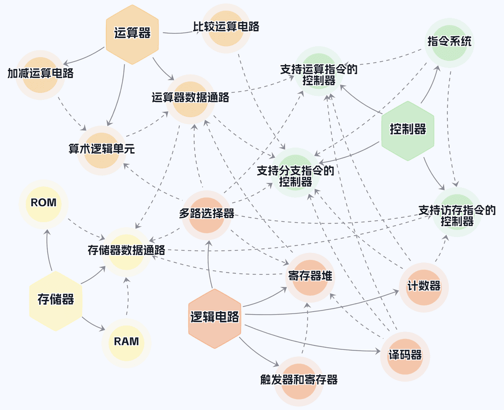

前言
本书实验是基于“Digital”仿真软件开发的面向计算机组成原理课程的系列实验。
全书共分五章，第一章集中介绍Digital仿真软件的基本使用方法，第二章复习逻辑电路基础模块。 但第一章并未设置独立的 “熟悉实验环境” 项目，而是将相关实操任务融入第二章的实验项目中。 因此第二章的实验项目具有双重作用：既是为了巩固基本的逻辑电路知识，也是为了熟悉Digital仿真软件的操作流程和使用技巧。 后续三章则围绕计算机的核心组成部件——运算器、存储器、控制器组织实验项目。
这些实验项目相互关联、紧密依存，按照从基础到复杂、循序渐进的原则，从逻辑电路的基础模块，到计算机的功能部件，直至计算机主机集成，环环相扣、逐步推进。学生通过这些实验，能够像滚雪球一样积累知识与技能，最终设计出一个简单的计算机主机。 项目依存关系如图所示。

在教学实施层面，教师可以根据实际教学需求及目标，灵活选取部分实验项目。 控制器一章所包含的三个并列实验项目，分别对应最终可达成的三种具体目标。依据所实现指令集的差异，三个项目名称中括号内的标识具有特定含义： “RI”表示控制器仅支持运算指令，前期不需要完成存储器实验和运算器一章的比较运算电路实验。 “RIM”则表示支持运算指令和存储器访问指令，这就要求前期必须完成相应的存储器实验。 “RIB”意味着支持运算指令和分支指令，前期需要完成比较运算电路实验。 此外，还可进一步提出 “RIMB” 的要求，即支持运算指令、访存指令和分支指令，使学生更全面地理解计算机指令系统的实现。
作者
肖铁军 <xiaotiejun@foxmail.com>
2024年2月15日